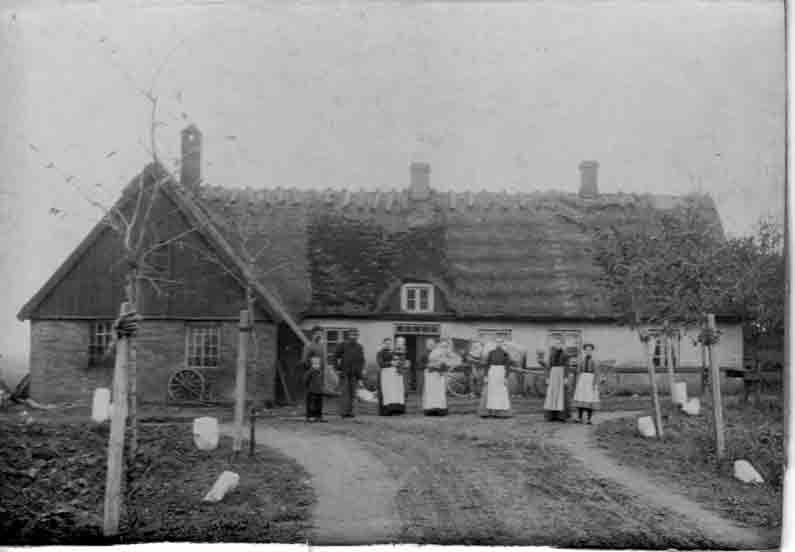
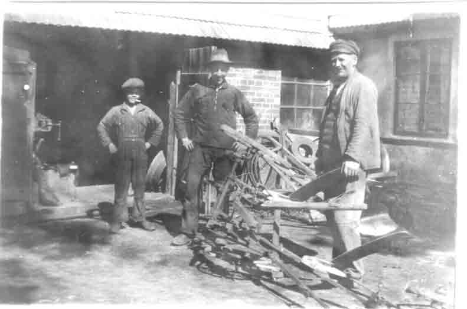
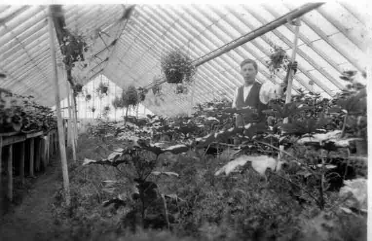

|
VIBY i gamla tider |
Fotogalleriet II |
|
|---|---|---|
|
 Uppställning utanför Karl Nilssons smedja då Johannehems allé var ung |
||
|
 Karl Nilsson med medarbetare framför smedjan. Vilka är medarbetarna, vem är den tuffa smedhalvan med cigarretten i mungipan? |
||
|
 Vem är trädgårdsmästaren och från vilket årtionde? |
||